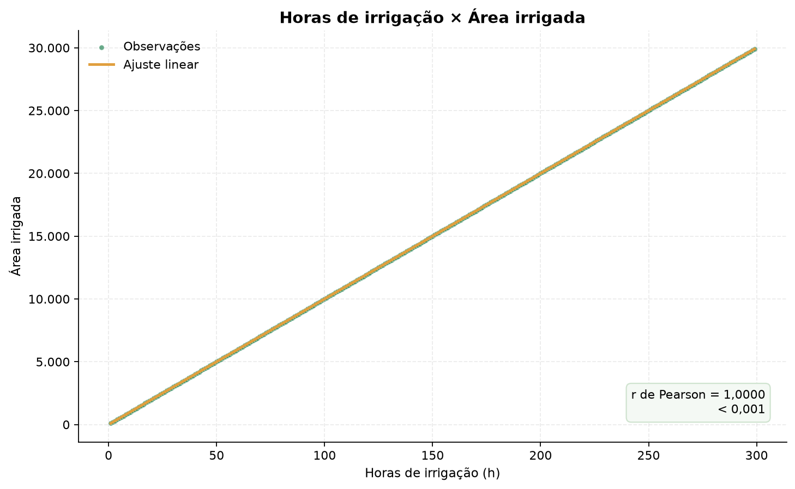
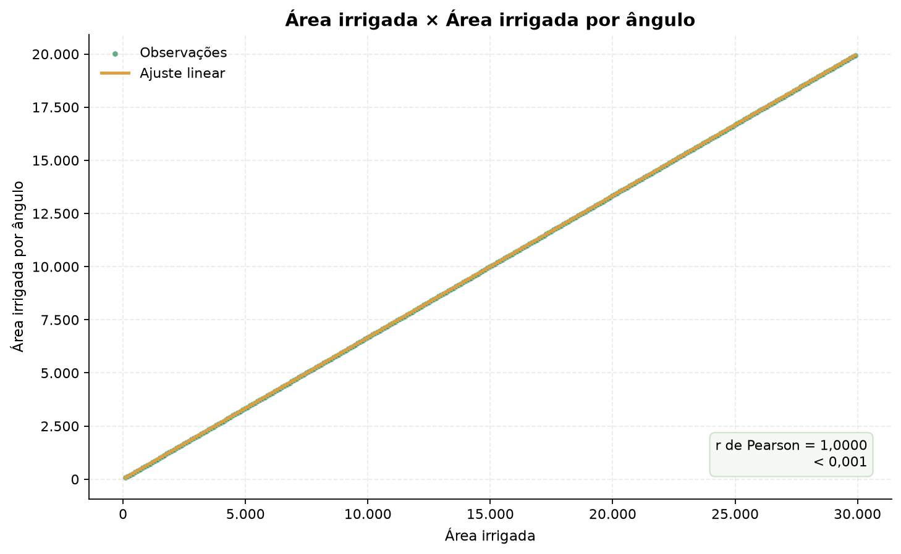
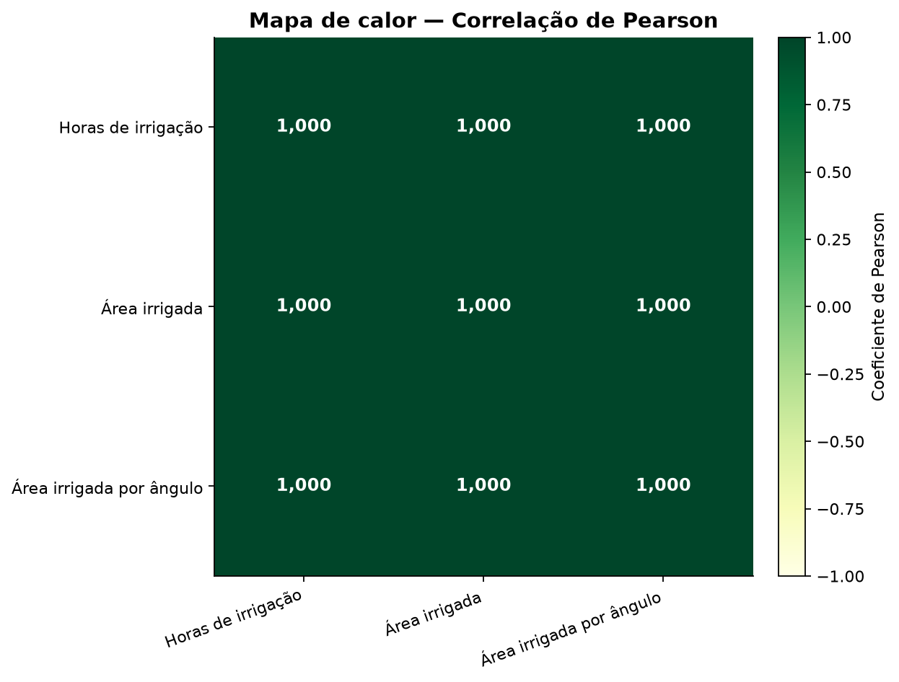
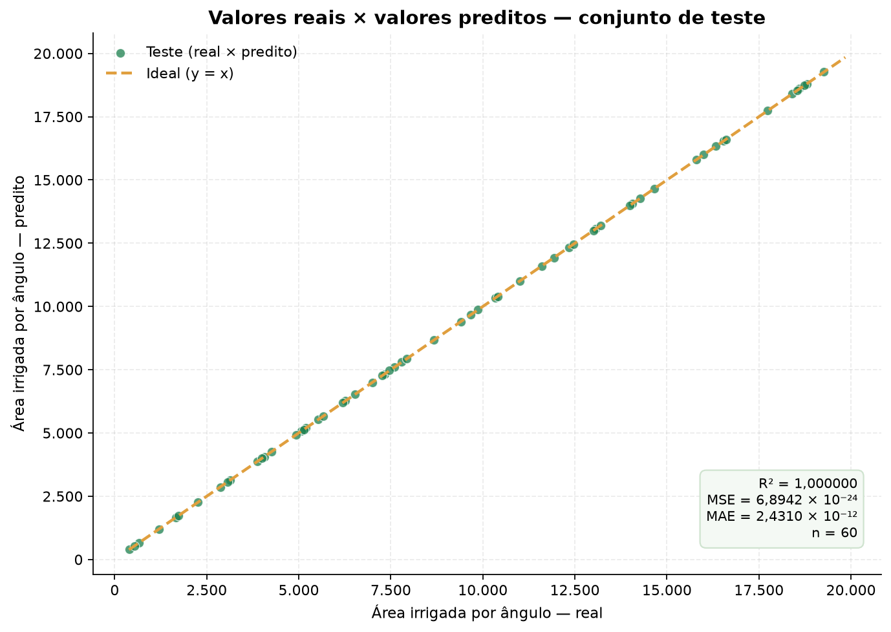
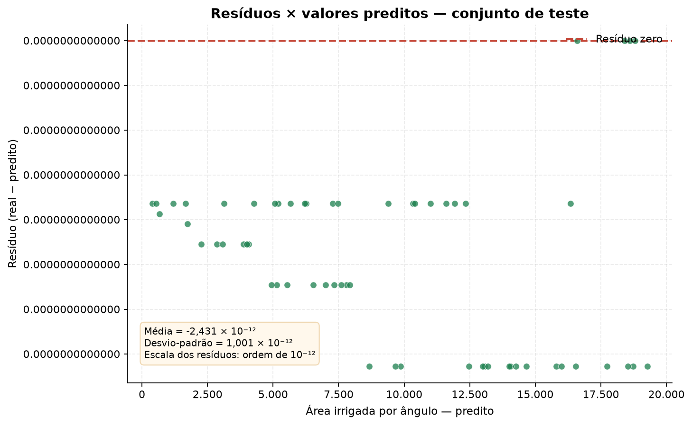
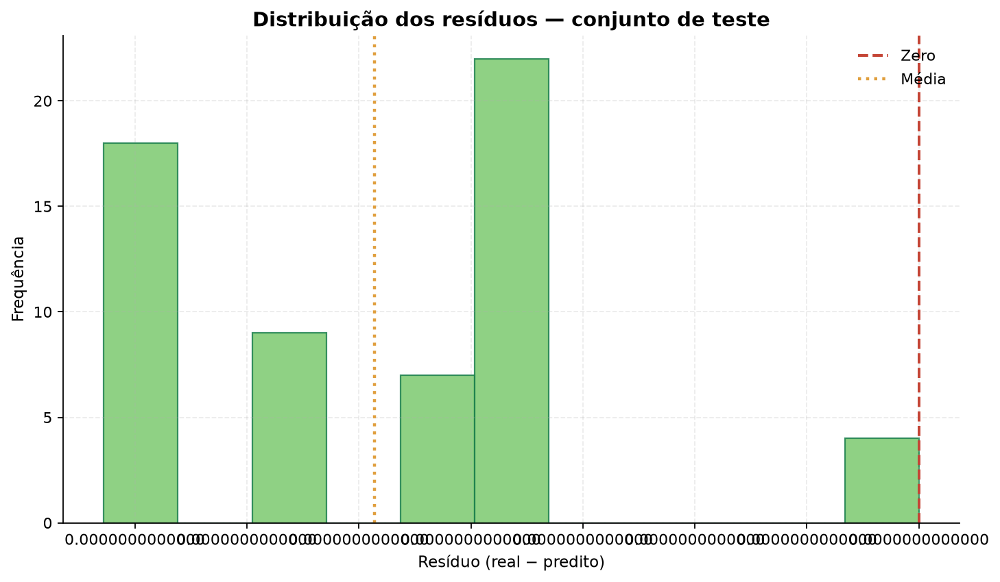
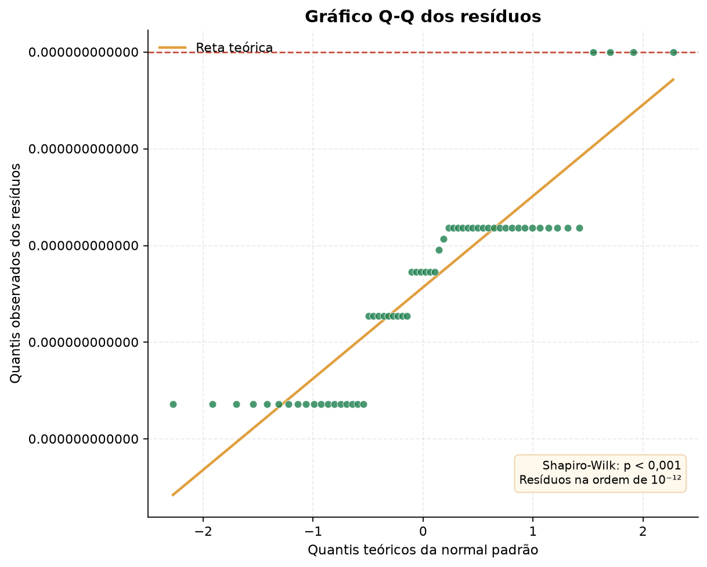
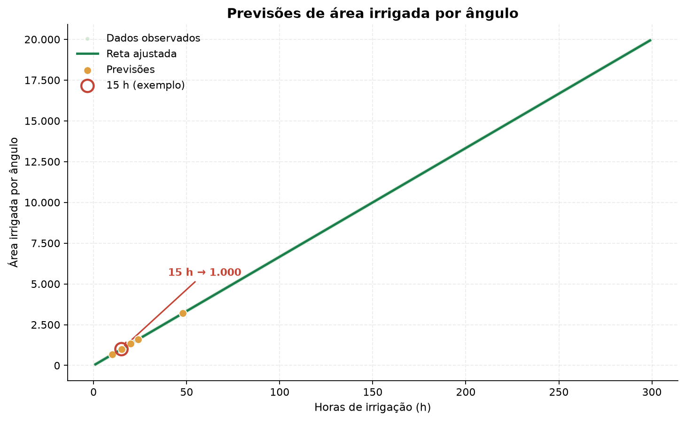

Data da análise: 29/10/2026
Base de dados: Arquivos/dados_de_irrigacao.csv — 299 registros e 3 variáveis
Modelo: regressão linear simples
Variável independente (X): horas de irrigação
Variável dependente (Y): área irrigada por ângulo
A base apresenta 299 registros completos, sem valores ausentes, duplicatas ou valores negativos. As três variáveis têm correlação linear de 1,0000, e o modelo de regressão linear obteve R² = 1,000000 no conjunto de teste, com MSE = 6,8942 × 10⁻²⁴ e MAE = 2,4310 × 10⁻¹².
A equação ajustada é:
Área irrigada por ângulo = 66,6667 × Horas de irrigação + (1,818989 × 10⁻¹²)
Para 15 horas de irrigação, a previsão é 1.000,00 de área irrigada por ângulo.
Achado central: a relação entre horas de irrigação e área irrigada por ângulo é exatamente linear nesta base (Y ≈ 66,6667·X). Os resíduos ficam na ordem de 10⁻¹², ou seja, são ruído de ponto flutuante, e não uma distribuição estatística real. Isso indica que a base é determinística/simulada; o modelo é exato para estes dados, mas essa exatidão não deve ser extrapolada automaticamente para o campo, onde há variabilidade climática, do solo, da uniformidade de aplicação e de medição.
A base está pronta para análise, sem necessidade de imputação ou remoção de registros.
| Variável | N | Média | Desvio-padrão | Mínimo | Q1 | Mediana | Q3 | Máximo | CV (%) | Assimetria | Curtose |
|---|---|---|---|---|---|---|---|---|---|---|---|
| Horas de irrigação | 299 | 150,0000 | 86,4581 | 1,0000 | 75,5000 | 150,0000 | 224,5000 | 299,0000 | 57,6387 | 0,0000 | -1,2000 |
| Área irrigada | 299 | 15.000,0000 | 8.645,8082 | 100,0000 | 7.550,0000 | 15.000,0000 | 22.450,0000 | 29.900,0000 | 57,6387 | 0,0000 | -1,2000 |
| Área irrigada por ângulo | 299 | 10.000,0000 | 5.763,8722 | 66,6667 | 5.033,3333 | 10.000,0000 | 14.966,6667 | 19.933,3333 | 57,6387 | 1,5872 × 10⁻¹⁵ | -1,2000 |
Leitura: as variáveis crescem de forma perfeitamente proporcional. A área irrigada é exatamente 100 vezes as horas de irrigação, e a área irrigada por ângulo é exatamente 2/3 da área irrigada. O coeficiente de variação é alto porque a amplitude é grande (1 a 299 horas), não porque haja dispersão em torno da tendência.


Os três gráficos mostram pontos alinhados sobre uma reta, sem nuvem de dispersão ou outliers. Isso é consistente com uma base gerada por uma regra matemática fixa.
| Variável | Horas de irrigação | Área irrigada | Área irrigada por ângulo |
|---|---|---|---|
| Horas de irrigação | 1,0000 | 1,0000 | 1,0000 |
| Área irrigada | 1,0000 | 1,0000 | 1,0000 |
| Área irrigada por ângulo | 1,0000 | 1,0000 | 1,0000 |
As correlações de Pearson e de Spearman são iguais a 1,0000 entre todos os pares, indicando associação linear positiva perfeita. Do ponto de vista prático, isso significa que as três variáveis carregam praticamente a mesma informação: horas de irrigação é suficiente para explicar a área irrigada por ângulo, e usar área irrigada como preditora adicional seria redundante (multicolinearidade perfeita).

Equação da reta:
Área irrigada por ângulo = 66,6667 × Horas de irrigação + (1,818989 × 10⁻¹²)
Coeficiente angular: 66,666667
Intercepto: 1,818989 × 10⁻¹²
R² treino: 1,000000
R² teste: 1,000000
O coeficiente angular indica que cada hora adicional de irrigação está associada a um aumento de aproximadamente 66,67 na área irrigada por ângulo. O intercepto é numericamente desprezível (≈ 10⁻¹²), como esperado em uma relação proporcional.
| Métrica | Valor |
|---|---|
| MSE | 6,8942 × 10⁻²⁴ |
| MAE | 2,4310 × 10⁻¹² |
| RMSE | 2,6257 × 10⁻¹² |
| R² | 1,0000 |
| MAPE (%) | 5,3124 × 10⁻¹⁴ |
| Erro absoluto máximo | 3,6380 × 10⁻¹² |
Leitura: MSE e MAE são praticamente zero. O R² é 1,000000, ou seja, o modelo explica toda a variabilidade observada. O MAPE é desprezível. Esses resultados confirmam um ajuste perfeito, mas devem ser interpretados com cautela: quando os dados são determinísticos, não há erro aleatório para o modelo aprender/capturar, e as métricas não informam como o modelo se comportaria em dados reais.

| Métrica | Valor |
|---|---|
| Média dos resíduos | -2,4310 × 10⁻¹² |
| Desvio-padrão dos resíduos | 1,0006 × 10⁻¹² |
| Resíduo mínimo | -3,6380 × 10⁻¹² |
| Resíduo máximo | 0,0000 |
| Soma dos resíduos | -1,4586 × 10⁻¹⁰ |
| Amplitude | 3,6380 × 10⁻¹² |
Os resíduos variam apenas entre -3,638 × 10⁻¹² e 0,000, com desvio-padrão de 1,001 × 10⁻¹². Essa ordem de grandeza (10⁻¹²) corresponde ao limite de precisão de números de ponto flutuante, não a erro de medição agrícola.


Não há padrão sistemático nos resíduos: eles são essencialmente zero. Em um conjunto real, esperaríamos resíduos distribuídos em torno de zero, com dispersão aproximadamente constante (homocedasticidade). Aqui, a variabilidade é inexistente em escala prática.
| Teste | Estatística | p-valor | Decisão |
|---|---|---|---|
| Shapiro-Wilk | 0,8437 | 1,9963 × 10⁻⁶ | Rejeita H₀ (não normal) |
| D'Agostino-Pearson | 3,3573 | 0,1866 | Não rejeita H₀ (compatível com normal) |
| Jarque-Bera | 2,7575 | 0,2519 | Não rejeita H₀ (compatível com normal) |

Interpretação: os testes entram em conflito porque os resíduos são numericamente degenerados (quase todos iguais a zero, com poucos valores distintos de 10⁻¹²). O Shapiro-Wilk rejeita a normalidade, enquanto o D'Agostino-Pearson não rejeita — um comportamento típico de dados quantizados, não de uma distribuição contínua real. Portanto, não é possível concluir que os resíduos sejam normais ou não; o teste de normalidade é inadequado para esta base. Em dados reais, essa etapa deveria ser repetida com resíduos em escala mensurável e, se necessário, com transformações ou modelos robustos.
| Horas de irrigação | Área por ângulo prevista | Destaque |
|---|---|---|
| 10 | 666,67 | |
| 15 | 1.000,00 | exemplo da checklist |
| 20 | 1.333,33 | |
| 24 | 1.600,00 | |
| 48 | 3.200,00 |
Exemplo da checklist: para 15 horas de irrigação, a área irrigada por ângulo prevista é 1.000,00.

Y = 66,6667·X + (1,818989 × 10⁻¹²).| Tarefa da checklist | Onde está | Status |
|---|---|---|
| 1. Carregar os dados de irrigação a partir de um CSV | Seção 1 | ✅ Concluído |
| 2. Visualizar os dados e as variáveis disponíveis | Seções 1 e 3 | ✅ Concluído |
| 3. Calcular as estatísticas descritivas | Seção 2 | ✅ Concluído |
| 4. Criar gráficos de dispersão | Seção 3 (figuras 01–03) | ✅ Concluído |
| 5. Analisar a correlação entre as variáveis | Seção 4 (figura 04) | ✅ Concluído |
| 6. Dividir os dados em treino e teste | Seção 5 | ✅ Concluído |
| 7. Treinar a regressão linear (X = horas, Y = área por ângulo) | Seção 5 | ✅ Concluído |
| 8. Imprimir a equação da reta | Seção 5 | ✅ Concluído |
| 9. Avaliar com MSE e MAE | Seção 6 | ✅ Concluído |
| 10. Visualizar resultados reais e preditos | Seção 6 (figura 05) | ✅ Concluído |
| 11. Calcular e analisar os resíduos | Seção 7 (figuras 06–07) | ✅ Concluído |
| 12. Verificar a normalidade dos resíduos | Seção 8 (figura 08) | ✅ Concluído |
| 13. Fazer predições (exemplo: 15 horas) | Seção 9 (figura 09) | ✅ Concluído |
resultados/figuras/ — 9 figuras em PNG;resultados/tabelas/ — estatísticas, correlações, métricas, resíduos, testes e previsões em CSV;resultados/relatorio.md — este relatório;resultados/relatorio.html — versão para navegador e impressão em PDF;resultados/tabelas/resumo_modelo.txt — coeficientes e equação do modelo.